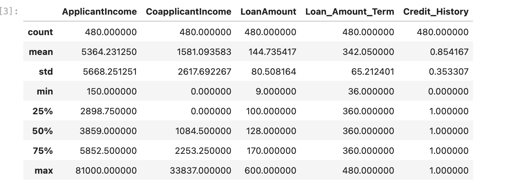

Loan application processing with Machine Learning
Leveraging Machine Learning for improved decisions
Technology is increasingly revolutionizing the financial sector. One of the way’s AI is used, is in the loan application and approvel process. AI-powered systems revolutionize this process by offering significantly faster service. This results in lower operational costs for banks, as automation reduces the need for expensive manual labor. Additionally, AI systems are available around the clock, providing constant service for customers. This 24/7 availability ensures that applications can be submitted and processed at any time, greatly enhancing customer convenience. Furthermore, AI reduces the likelihood of errors that are often associated with human processing, leading to more accurate and reliable loan decisions. Because of these advantages I chose to pursue a project in this area.
Dataset
For this data analytics endevour the "Finance Loan Approval Prediction Data" dataset - available on Kaggle - was used. The dataset is intended for building and testing predictive models that determine the likelihood of loan approval for applicants based on various financial and demographic factors. It includes a range of features such as gender, marital status, education, number of dependents, income levels, credit history, property area, and loan amount, among others. With one data set of around 600 rows, which includes loan application outcome and one non-labeled datset of 300 rows, with no loan application outcome, it it provides a significant number of data points.
Data Preprocessing
Several steps were performed to ensure a good fit of the Machine Learning Model. First missing values were dropped, to ensure that the ML algorithm can be fully run. Other methods of handling missing values were discussed, due to the concern of data loss. But with around 600 rows of data there was plenty to spare and it seemed to be the most robust approach. Then for the numerical columns descriptive statistics were obtained, which showed significant outliers. Therefore, the decision was made to drop all rows being outside the range of mean - 3 * std and mean + 3 * std . All of this preprocessing left 450 rows in the data frame, enough to train the ML models.
Limited Data Exploration in SQL
To get a better understanding one of the datasets was uploaded to an SQL server to easily explore some features of the dataset using group by. For example the conclusion emerged, that men in the data set have a higher average salary, despite being less likely to be a graduate.
Machine Learning Models
Artifical Neural Network
The first approach was to employ a deep learning algorithm via Python and the tensorflow library to correctly predict if the applicant should receive a loan. Tensorflow and keras were chosen because of the wide variety of pre trained and easy to apply models. A snippet of the code can be seen below:
#the shape of the input layer has been set to match the input dimension specified earlier
input_layer = Input(shape=(input_dim,))
# specification of the hidden layer with 64 neurons (this was chosen arbitrarily)
hidden_layer = Dense(64, activation='relu')(input_layer)
# Since binary classification is done, the output layer has a single neuron.
#the output of this neuron will be a value between 0 and 1, representing the probability of the loan being approved
output_layer = Dense(1, activation='sigmoid')(hidden_layer)
#the model is specified with the input set to the input layer and the output to the output layer
model = Model(inputs=input_layer, outputs=output_layer)
# Below the model has been compiled
# binary crossentropy is chosen as a loss function for a binary classification problem
#as optimizer adam is chosen because is is computationally efficient and has little memory requirements
#the metric to be optimized in the model is accuracy, to achieve accurate predictions later on
model.compile(optimizer='adam', loss='binary_crossentropy', metrics=['accuracy'])
#Training of the model
#50 training runs (called epochs) are specified and batch size of 32
#for both parameters different combinations were tried but non lead to better accuracy than this combo
model.fit(X_train, y_train, epochs=50, batch_size=32, validation_split=0.2)
After training and testing the model the accuracy was measured and the following result was obtained. This means that the model gives accurate prediction 83% of the time.
Logit Regression
With a Logit regression a simpler approach was also conducted to test it agianst the Deep Neural Network. To showcase a wider range of skills, this analysis was conducted with the programming language R. This was done on the basis of the already cleaned data from the previous approach. An extract of the code can be found below. The obtained accuracy was 80%.
split <- createDataPartition(y = loan_data$Loan_Status, p = 0.75, list = FALSE)
train_data <- loan_data[split,]
test_data <- loan_data[-split,]
model <- glm(Loan_Status ~ Gender + Married + Dependents + Education + Self_Employed + ApplicantIncome + CoapplicantIncome + LoanAmount + Loan_Amount_Term + Credit_History + Property_Area_Rural + Property_Area_Semiurban + Property_Area_Urban, data = train_data, family = binomial)
[1] "Accuracy: 0.803571428571429"
Results and predictions
As expected, the ANN showed superior accuracy to the simple regression function. However, the difference was quite small, which can probably be explained by the relatively small number of data points for training the ANN model. Based on the superior performance of the ANN compared to the simpler regression function, it was decided to use the deep learning algorithm to predict the outcome for the applications in the second table (test.csv) of the kaggle dataset. This was again done in Python.